| 日付 | 2022年3月13日（日） |
|---|---|
| 山域 | 高尾周辺 |
| メンバー | 家族（妻、長女・11歳、長男・8歳） |
| 山行形態 | 子連れ日帰り |
| アクセス | 車 |
| ルート (Map) | 梨ノ木平 (7:48) - (8:26) 山ノ神 - (9:16) 扇山 (9:30) - (10:11) 浅川峠 - (11:23) 権現山 (11:59) - (13:01) 浅川峠 - (14:05) 扇山 (14:19) - (14:46) 山ノ神 - (15:09) 梨ノ木平 |
花粉の季節なので、花粉を避けて群馬の荒船山にでも登ろうかと考えていたが、
調べてみるとまだまだ雪が残っていそうだ。
一応岩山なので、子連れで雪のある時期に行くのは少し避けたい。
予定を変更し、夏に向けて体力をつけるため、
扇山～権現山のロングコースを歩いてみることにする。
権現山は14年振りの訪問だ。
梨ノ木平の駐車場に車を停める。標高590m。
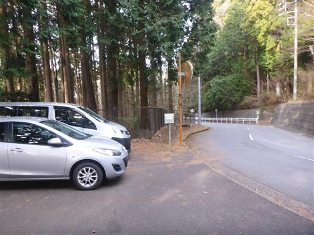
登山口にある扇山管理委員会の小屋。
ずいぶんと立派な小屋だが、中には何があるのだろう？
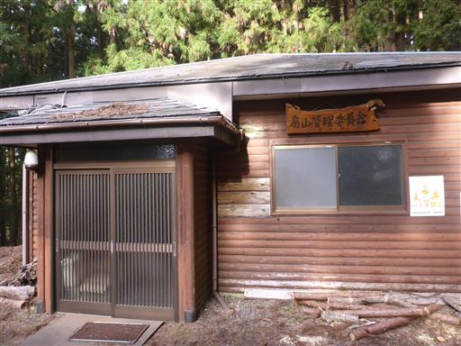
登山開始。
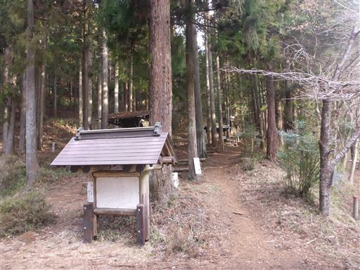
スギ林の中を登って行く。花粉が心配だ。
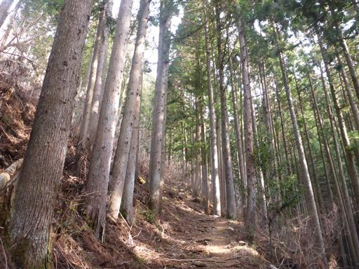
水場に到着。
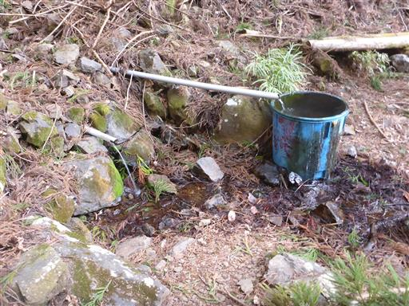
水場のすぐ側に山ノ神社がある。
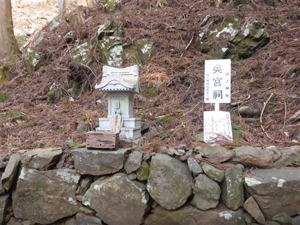
スギ林から解放されてようやく自然林になる。
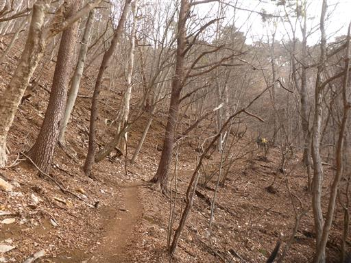
稜線に到達。ここから扇山まではすぐだ。
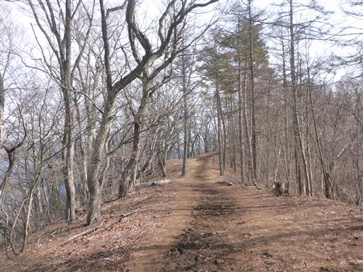
扇山山頂に到着。標高1138m。
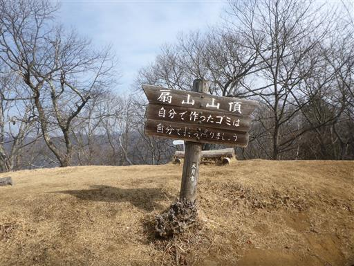
山頂からは富士山の展望が素晴らしい。
本日は雲が多い予報だったが、幸い青空の元の富士山を眺めることができる。
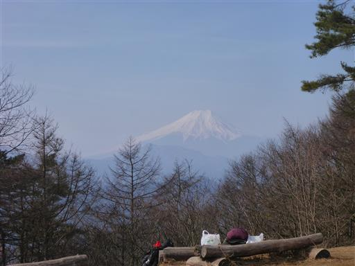
本日は行程が長いためすぐに出発。権現山に向けて歩き出す。
下り始めはものすごい急斜面だ。北側斜面で雪解け直後なのか、
土が水分を含んでいてドロドロで滑りやすい。
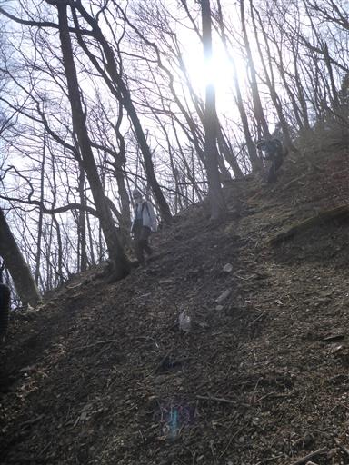
ようやく平坦な道になる。そこそこの痩せ尾根だ。
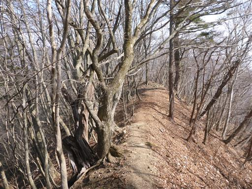
曽倉山に到着。周囲は平らであまり山頂っぽくない場所だ。
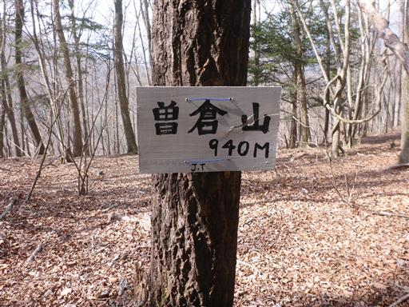
浅川峠に到着。ここで休憩している団体登山者がいる。
どこから登って来たのか分からないが、このマイナーなルートを歩く人が他にもいるようだ。
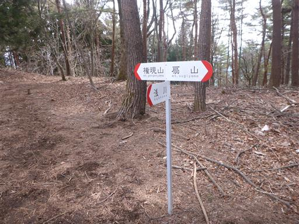
落ち葉積もる斜面。登山道が見えにくい。
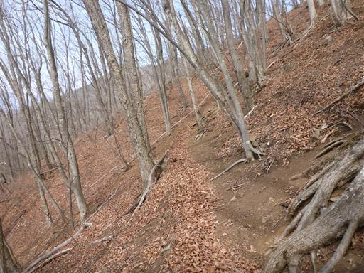
稜線に到達。権現山は目の前だ。
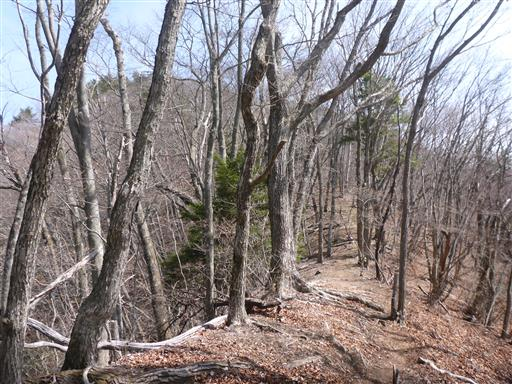
権現山山頂に到着。標高1312m。
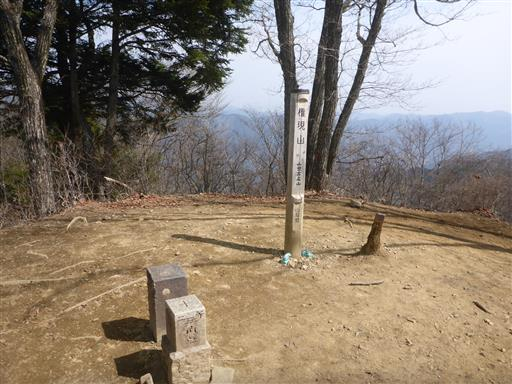
そこそこの視界が広がる。正面に見えるのは三頭山。
遠くに見えるのは左から飛龍山、雲取山だ。
昼食をとったら下山を開始する。
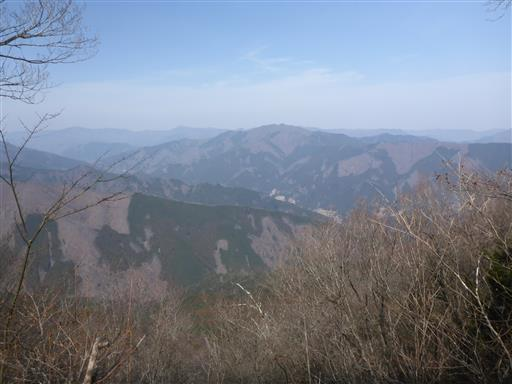
復路は扇山の登り返しが結構しんどい。
扇山の山頂直下に一際目立つ大木が立っている。
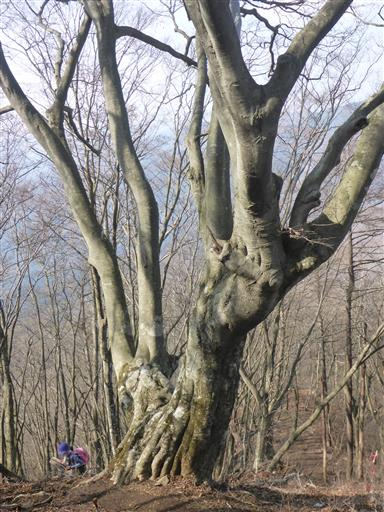
扇山に戻ってくる。もう山頂には誰もいない。
子供達は花粉症で鼻水が出て、目が痒くて、かなり辛そうだ。
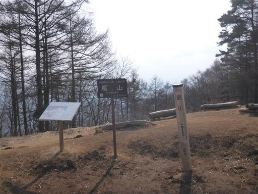
無事下山。
トレーニングのため、そこそこのロングコースを歩いたが、
花粉が多く、息子は翌日の学校を休む羽目になってしまった。
今後、3月は北の方の雪山など花粉が無い山でないと登れなさそうだ。
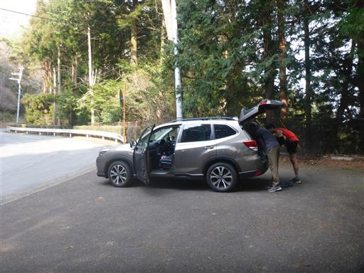